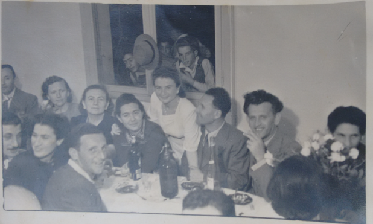
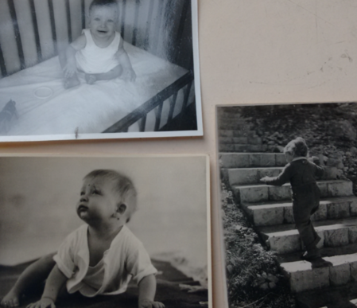
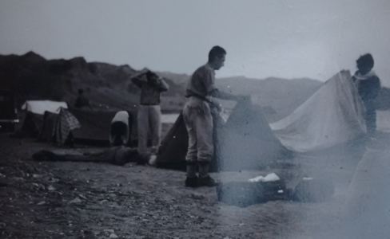
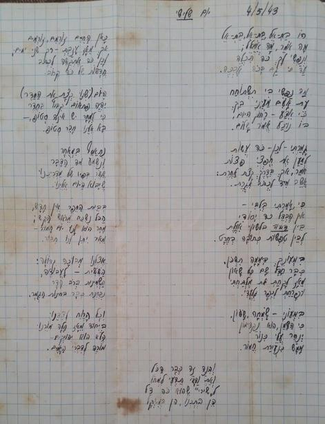

Family
In 1948, Batel Married Efraim Talmon. The following is a wedding photo, taken, as the back says, in the teacher's lounge in the Nahlat Ganim school (in Ramat Gan, Israel):

In Efraim's web site we can find more photograph of their long marriage, which lasted for 64 years (until Efraim's death in 2009). They have had three children: Nurit (b. 1950), Na'ama (b. 1952), and Avner (b. 1954). Batel had made it a point – ever since the children grew up and left the house, in the 1970s – that every friday, for almost forty years, the children, and their families, will come to eat Friday night dinner in their house in Ramat Hasharon. This has kept the family together to this day. Here is a photo of – I believe! – Nurit (top left), Na'ama (bottom left) and Avner (right) as toddlers from the 1950s:

Both Efraim and Batel were avid Zionists and traveled the country whenever they could. Here is a photo of their camp (they travellet with friends) in Eilat, 1958, which gives an idea of the spartan conditions in the country in general at the time:

A recent find by one of Batel's granddaughters is an amusing “love song” (actually more of a “humorous friendship” song) from the 17-year-old Efraim to Batel, who was already what we today would call a “girlfriend”. The song says – in rhyme, and, typically of Efraim, in excellent Hebrew:
